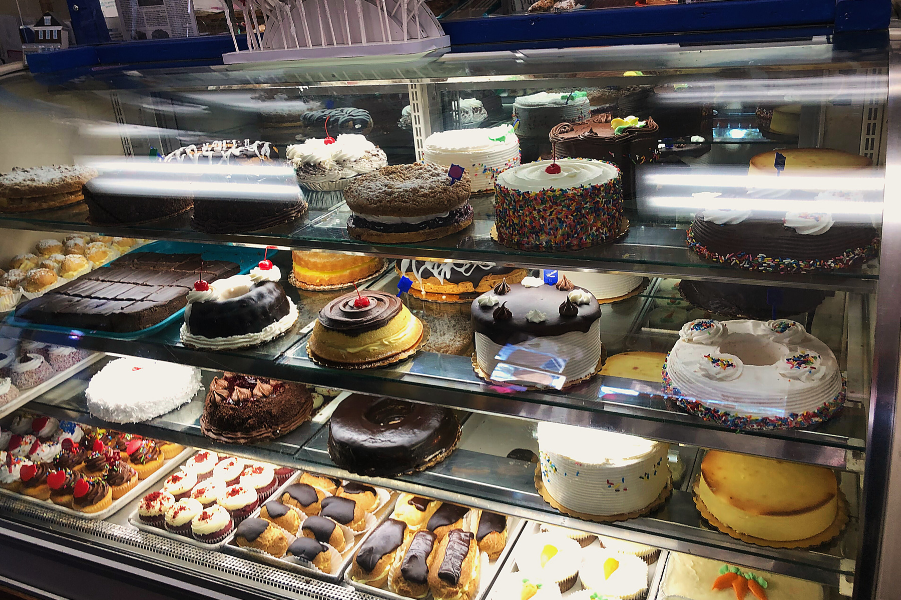
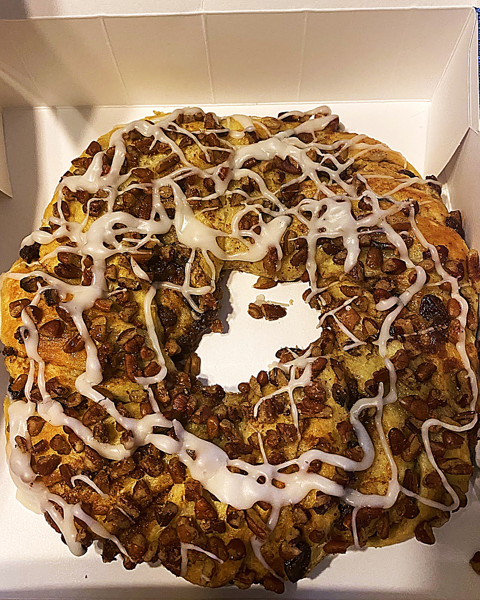

Donuts & Breakfast Pastries
Fresh ring donuts, jelly donuts, old-fashioned donuts, rolls, muffins, danish, and coffee-cake favorites.
Staten Island's family bakery since 1878
For generations, Holtermann's Bakery has served Staten Island with fresh breads, donuts, cookies, cakes, pies, pastries, and hard-to-find classics like Charlotte Russe. Stop in for breakfast, pick up a box of pastries, or call to order a cake for your next celebration.

Local favorites
From jelly donuts and crumb cake to banana cake, pecan rings, eclairs, fresh Italian bread, and Charlotte Russe, our cases are filled with the bakery favorites Staten Island families have loved for decades.
Fresh ring donuts, jelly donuts, old-fashioned donuts, rolls, muffins, danish, and coffee-cake favorites.

Birthday cakes, wedding cakes, specialty cakes, cupcakes, loaf cakes, and party-ready sweets.

Fresh breads, fruit pies, custard pies, butter cookies, mixed cookies, seasonal treats, and more.

Custom cakes
Planning a birthday, wedding, holiday, or family gathering? Call or stop in to talk through your order. We'll help you choose the right cake, filling, icing, size, and pickup time.

Heritage
Holtermann's has been part of Staten Island life since 1878. Customers describe the bakery as old-school, authentic, friendly, and full of the smells and flavors they remember from childhood.
Read our storyReviews
Customers praise the fresh pastries, friendly counter service, jelly donuts, crumb cake, coffee rings, breads, cupcakes, custom cakes, and nostalgic neighborhood-bakery feel.
★★★★★"The aromas are intoxicating. The people are very friendly and the pastries are amazing."
★★★★★"Exceptional baked goods of all kinds. From bread loaves to cupcakes and pastries, everything is fresh and delicious."
★★★★★"The crumb cakes and coffee rings are the best. We are third generation customers."
Visit
Holtermann's Bakery is open seven days a week on Arthur Kill Road in Staten Island. Orders are accepted by phone or in person.
405 Arthur Kill Rd
Staten Island, NY 10308
Holiday hours may vary — please call to confirm.